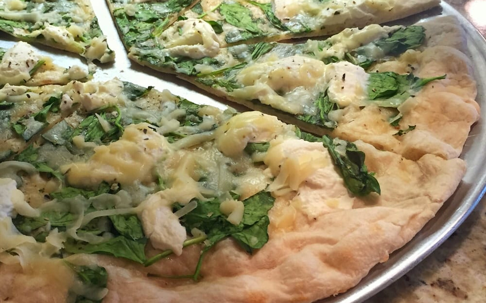
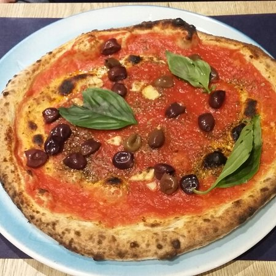
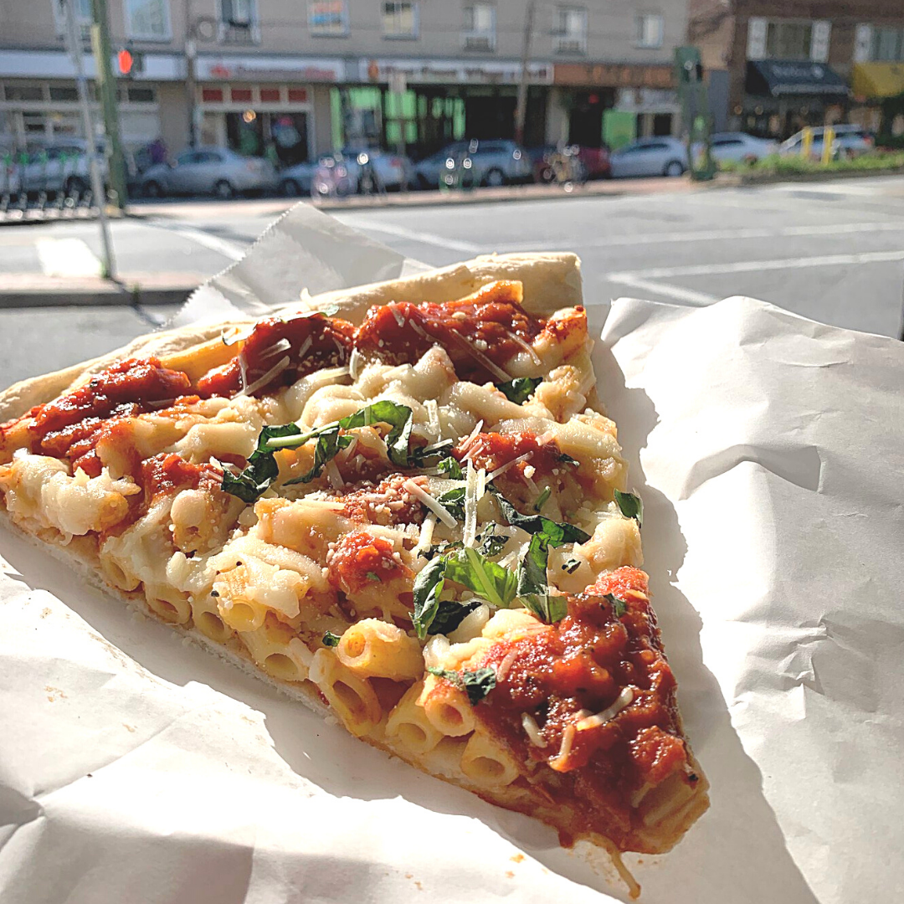
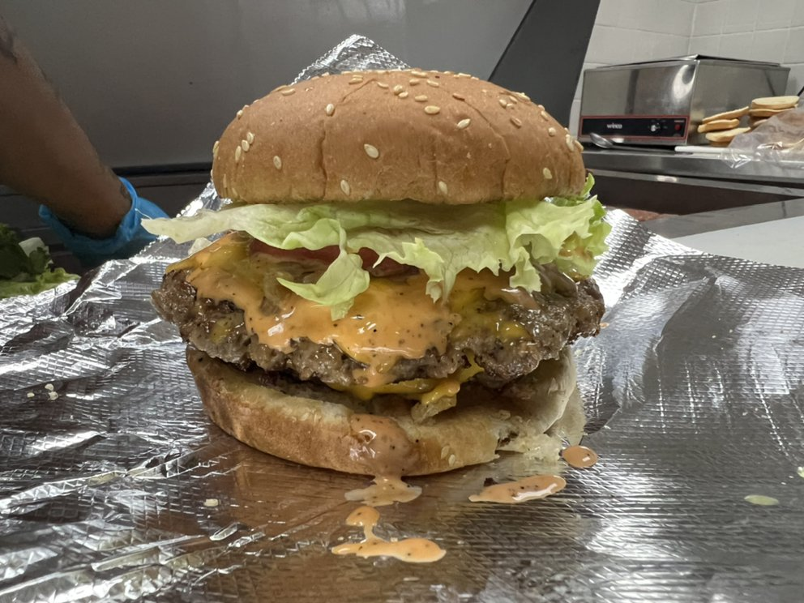
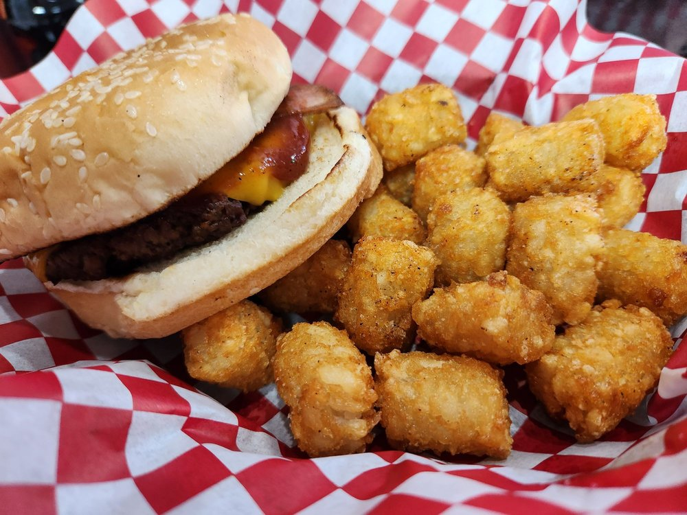
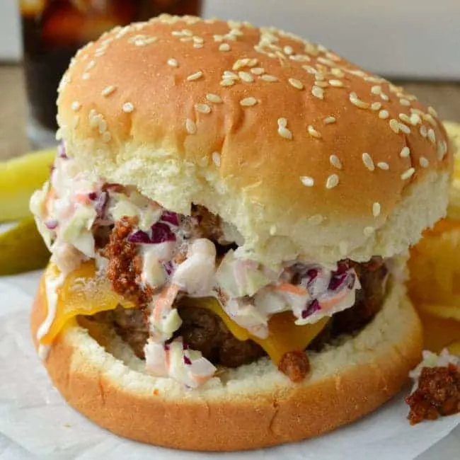

Some of the best Pizza on Tate Street can be found and the famous Slices Pizza by Tony. He provides a vareity of pizza for his customers and a few italian deserts if you are in the mood for some sweets! Stop by his shop around lunch time to get a special deal on his mouthwatering Pizza.
Location: 401 Tate St, Greensboro, NC
Hours: Open Monday thru Saturday 11 am to 9:20 am
Specialty Pizza: White Pizza, Marinara Pizza, and Mac & Cheese Pizza



Perhaps you are vegetarian, vegan, or just looking for a healthier options? Stop by Romeo's Vegan Burgers and grab some amazing vegan burger that is sure to blow your mind. Don't let the looks and taste deceive you as it is all truly vegan. Stop by here to get their amazingly healthy burgers along with a side of fries or tater tots!
Location: 413 Tate St, Greensboro, NC 27403
Hours: Everyday from 10 am to 10 pm
Specialty: Where Art Thou Romeo Burger, Romeo BBQ Bacon Burger, Tobacco Road Burger



In the mood for some Indian cusine? Stop by Raaz and get some of their amazing Indian food. They have food ranging from Gobi Manchurian and the way to Vindaloo which you can get either not spicy, mild, spicy, or very spicy. While you are eating you can refresh with an amazing Mango Lassi which is sure to refresh you at the end!
Location: 427 Tate St, Greensboro, NC 27403
Hours: Monday thru Saturday from 11:30 am to 10 pm
Specialty: Chicken Briyani, Tikka Masala, Vindaloo